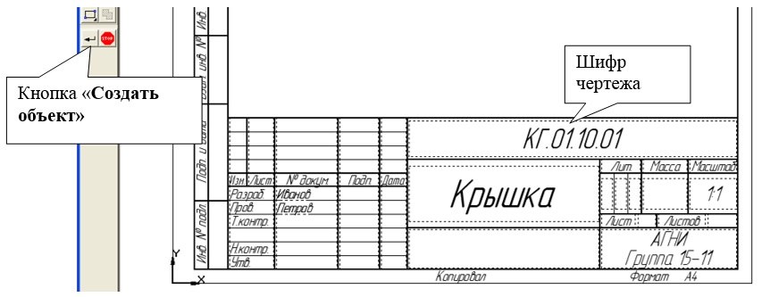
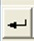

1.9 ВИБІР ФОРМАТУ ТА ОРІЄНТАЦІЇ
Основний напис
з'являється і розміщується на кресленні автоматично. Для переходу в режим
заповнення основного напису можна виконати одно з наступних дій:
1. Подвійне клацання
лівою кнопкою миші у будь-якому місці основного напису;
2. Визвати
команду Вставка – Основная
надпись.
У режимі заповнення основного напису її вид зміниться - межі осередків виділяться штриховими лініями (рис.10).

Рис.10 Заповнення основного напису
Шифр креслення
включає наступні
розділи:
КГ – назва
дисципліни;
01 – порядковий номер
лабораторної роботи;
10 – індивідуальний номер
варіанту виконуваної робот;
01 – порядковий номер креслення.
Заповнивши усі
графи, натисніть кнопку 
Зберегти викреслені
креслення можна:
·
За
допомогою меню Файл®Сохранить
або
·
За
допомогою клавіши
У вікні (рис.11), що
відкрилося, створіть нову теку.
Папка - це каталог для
зберігання однотипних файлів (документів), що має певне ім'я, де зберігатимуться
усі викреслені в процесі навчання ваші креслення. Теці присвойте ім'я (своє
прізвище) і збережіть в ній своє креслення.
Рис. 11 Збереження
креслення